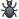

| Notation | Image | Description |
|---|---|---|
| :) :-) :smile: | |
smile |
| :( :-( :frown: | |
frown, sad smile |
| :D :-D :biggrin: | |
big grin |
| 8-) :cool: | cool | |
| ;) ;-) :wink: | wink | |
| ;( ;-( :cry: | cry | |
| (:I :sweat: | sweating | |
| :I :-I :speechless: | indifferent, speechless | |
| :* :-* :kiss: | |
kiss |
| :P :-P :p :-p :tongue: | stick out tongue | |
| :o :-o :blush: | |
embarrassment, blush |
| :^) :wonder: | wondering | |
| I-) :snooze: | sleepy, snooze | |
| I-( :dull: | dull | |
| :love: | I love it! | |
| ]:) ]:-) >;-) :evilgrin: :devilish: | evil grin | |
| :talk: | talking | |
| I() I-() :yawn: | yawn | |
| :& :-& :puke: | |
puke |
| :doh: :eek: | doh | |
| :@ :-@ :angry: | angry | |
| :wasntme: | oops, wasn't me | |
| :party: | |
party |
| :S :-S :s :-s :confused: :worried: | worried, confused | |
| :mmm: | joy | |
| 8-I B-I :nerd: | nerd | |
| :-X :lipssealed: | my lips are sealed | |
| :hi: | me waving | |
| :call: | call me back | |
| >:-) :devil: | evil | |
| :angel: | angel | |
| :envy: | envy | |
| :wait: | hey, wait a sec | |
| :bear: | bear, hug | |
| :hug: | bear, hug | |
| :makeup: | makeup, lips | |
| :giggle: | covered laugh | |
| :clap: | clapping hands | |
| :? :-? :think: | thinking | |
| :bow: | bow | |
| :rofl: | rolling on the floor laughing | |
| :wew: | whew | |
| :whew: | whew | |
| :happy: | happy | |
| :smirk: | smirk | |
| :nod: | nod | |
| :shake: | shake | |
| :punch: | punch | |
| :emo: | emo | |
| :yes: :ok: | yes | |
| :no: | no | |
| :handshake: | handshake | |
| :heart: | heart | |
| :brokenheart: | broken heart | |
| :mail: | ||
| :flower: | flower | |
| :rain: | rain | |
| :sun: | sun | |
| :time: | time | |
| :music: | music | |
| :movie: | movie, film | |
| :phone: | phone | |
| :coffee: | coffee | |
| :pizza: | pizza | |
| :cash: | cash | |
| :muscle: | muscle | |
| :cake: | cake | |
| :beer: | beer | |
| :drink: | drink | |
| :dance: | dance | |
| :ninja: | ninja | |
| :star: | star | |
| :morning: | morning | |
| :finger: | finger | |
| :bandit: | bandit | |
| :drunk: | drunk | |
| :smoke: | smoke | |
| :toivo: | tovio | |
| :rock: | rock | |
| :headbang: :mad: | head bang, getting mad | |
| :bug: |  | bug |
| :foobar: | foobar | |
| :poolparty: | pool party | |
| :swear: | swear | |
| :tmi: | tmi | |
| :heidy: | heidy | |
| :malthe: | malthe | |
| :tauri: :rolleyes: | tauri | |
| :priidu: | priidu | |
| :skull: | |
dead, deadly, doom |
| Preference | Meaning | Default |
|---|---|---|
SMILIESPLUGIN_TOPIC |
The name of the topic containing your Smilies. Use format web.topic. |
SmiliesPlugin |
SMILIESPLUGIN_FORMAT |
The way the emoticon is displayed. You can use $emoticon (e.g. :D), $url (e.g. %ATTACHURL%/biggrin.gif) and $tooltip (e.g. "big grin"). |
<img
class='smily'
src='$url'
alt='$tooltip'
title='$tooltip'
/> If possible, use single quotes for html attributes |
cd /path/to/foswiki perl tools/extension_installer <NameOfExtension> installIf you have any problems, or if the extension isn't available in
configure, then you can still install manually from the command-line. See https://foswiki.org/Support/ManuallyInstallingExtensions for more help.
| Change History: | |
| 17 Sep 2015: (2.03) | |
| 25 Jun 2015: (2.02) | |
| 27 Feb 2014: | modernized code and icon set |
| 05 Oct 2012: | use single quotes to enable use of smilies within Macros |
| 05 Dec 2011: | Version released with Foswiki 1.1.4. Minor code cleanup. |
| 11 Apr 2011: | Version released with Foswiki 1.1.3. Only a minor change related to how the plugin is being upgraded |
| 04 Aug 2010: | |
| 20 Sep 2009: | Small documentation update. Included with Foswiki 1.0.7 |
| 13 Jan 2009: | Removed default preferences from this topic |
| 04 Jan 2009: | Foswiki version - Fixed the use of SMILIESPLUGIN_TOPIC so you can create your own smily collection that does not get overwritten when upgrading Foswiki |
| 21 Nov 2007: | Doc improvements |
| 16 Mar 2005: | Fixed typo "scull" |
| 5 Mar 2005: | 1.004 Crawford Currie prepared for Dakar |
| 21 Nov 2004: | Added benchmarks (no code changes) |
| 21 Aug 2004: | Fixed tooltip for Netscape; added "sealed lips", "thumbs up", "yes" "no", "in love", "skull" |
| 16 Feb 2004: | Added "devil" and "devilwink" smilies (by |
| 26 Feb 2003: | Added "indifferent" smilie |
| 20 Oct 2002: | Fixed STDERR warning for non-initialized Plugin |
| 20 Apr 2002: | Improved performance; removed non-standard Plugin API dependencies; added standard plugin topic content -- |
| 23 Nov 2001: | Added TOPIC and FORMAT setting |
| 10 Jun 2001: | Packaged into ZIP |
| 28 Feb 2001: | Initial version |
| Dependencies: | None |